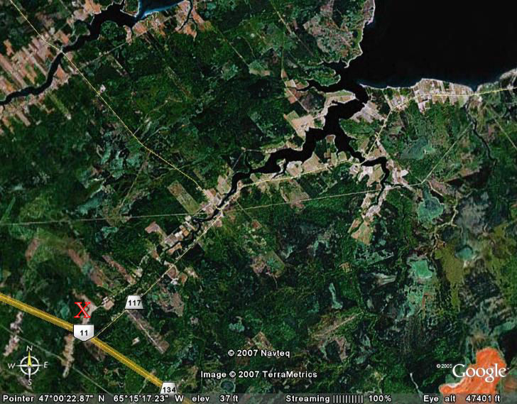

The Family Chronicle
No. 146 November 5, 2007
____________________________________________________________________

A view of Black River from space
Miramichi Lumberman
I am indebted to Art Mills for the loan of a book by Arnold J. Somers (1994) about his experiences as a lumberman on the Miramichi. (Somers’ experiences not Arthur’s’) The book rings with memories of peavies, log jams, biscuits, buns, beans, spruce, hemlock, sawmills and gingerbread.
Here are a few nuggets – direct quotes from the book:
“in the winter of 1939-40, the wages were a dollar and one-half a day”
“a 12 foot piece (of yellow birch) being cut off first, then a 16, then another 12. Altogether, there was over a thousand (board) feet in the three pieces”
A crew of three could cut “anywhere from three-and-one-half to five thousand (board) feet” a day
In the 1920’s “we all looked forward to the freedom of bare feet”
In the 1920’s “the average earnings of a labourer were not more than $300 per year”
“I guess the people of my community were poor all right, but theirs was not the kind of poverty that produces despair or crime or the kinds of ugliness associated with the word ‘poverty’ today. While they were short on material goods, they never lost their moral or spiritual strength, that is why they didn’t feel poor”
“everyone of voting age had to pay a poll tax of one dollar. If this wasn’t paid you lost your voting privilege”
“If you owned a car, you had to pay a license and you were charged a small tax on gasoline. There was also a road tax in the vicinity of five dollars. Anyone who preferred could go to work on the road until he earned enough to pay this tax. This work was called ‘statute labour”
“then there was a school tax levied by each school board”
“there was a tax collected by the county, called ‘poor rates’ or county rates”
There was a “poor house or Alms House” in Chatham’. …this was a large three story white building…”
I remember staying at a nice, clean, local hotel for 75 cents a day for my room and three meals”
Cars had running boards. When about to pass a person on foot, one would slow down and invite them to “jump on the running board”. When he reached his destination he would jump off without the car ever stopping.
Haywire
The book also mentions the versatility of haywire; it was the duck tape of my era and was used for practically any kind of repair around the farm.
It was not unusual to carry a piece with you in your wagon, or old car, just in case.
The haywire I remember came in strands about 10 feet long and was used for baling hay; this has been replaced by twine... It was black iron, perhaps 14 or 16 gauge, and soon rusted.
Donald Edge sent the following:
“According to early maps
reprinted by Ganong, Fox Island was originally Ile
au Pendu
(Hangman's Island), and Bay du Vin was originally Baie
des Ovines (Sheep's Bay).
Fox Island was once a part of Glenelg Parish, and the 1851 Census
lists occupants of houses 77 & 78 in the Fox Island
Establishment.
There
is also an Egg Island, but that may be another name for Huckleberry
Island. For some reason lost in the mist of time I think
Huckleberry Island had two names. Within the past few decades
Portage Island split in two--does one half now have another name?”
Chimney Fires
We had or chimney cleaned a few days ago and I was reminded of chimney fires in Black River. Creosote builds when the warm smoke meets the cold chimney and is especially bad when burning green wood. Dry wood, on the other hand, allowed for a hotter fire and reduced the build up of creosote.
The Family Chronicle (Copyright) is an occasional newsletter published by Don Glendenning and posted on the family website. It is intended to share information about my family, community and the times in which I grew up. While every effort is made to be accurate, errors are likely to occur. Comments, enquiries and information may be sent to 62 Queen Elizabeth Drive, Charlottetown, PEI, C1A 3A9. Tel: 902 892 5859. Email: don@glendenning.net Web: www.glendenning.net/don